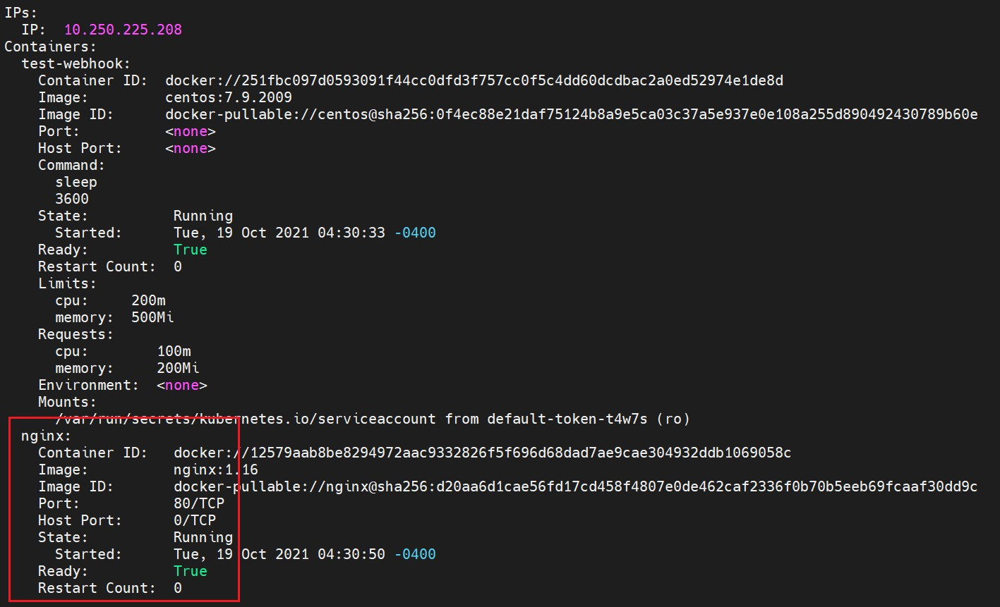

kubernetes的准入控制器的开发，通常情况下要么使用go的net/http开发http服务端来实现逻辑，更简单的方法是使用conntronl-runtime实现。我们用
kubebuilder来开发k8s operator的时候，可以生成自定义资源的webhook，同时也能方便的生成资源清单。但无论是kubebuilder还是operator-sdk框架都无法实现core type资源的webhook。kubebuiler的官方文档提到了core type webbook的开发，但并未具体提供具体的开发指导。那么如何利用
kubebuiler来简化核心资源准入控制器的开发？下面就探索了一种方式。
按照一般CRD开发方式生成代码框架
对于
kubebuilder的使用这里不做赘述；生成代码框架：
1
2
3
4
5
6
7
8
9
10
11
12
13
14
15
16
17
18
19
20
21
22
23
24
25
26
27
28
29
30创建文件夹
mkdir pod-sidercar-webhook
go mod init github.com/songjl/podwebhookdemo
申城代码框架
[root@Docker pod-sidercar-webhook]# kubebuilder init --domain songjl.com --license none --owner "JLSong"
Writing kustomize manifests for you to edit...
Writing scaffold for you to edit...
Get controller runtime:
go get sigs.k8s.io/controller-runtime@v0.8.3
Update dependencies:
go mod tidy
Next: define a resource with:
kubebuilder create api
[root@Docker pod-sidercar-webhook]# go get sigs.k8s.io/controller-runtime@v0.8.3
[root@Docker pod-sidercar-webhook]# go mod tidy
生成api，这里注意，我们要创建的是核心资源的 webhook，所以不需要生成 Resource 和 Controller
[root@Docker pod-sidercar-webhook]# kubebuilder create api --group core --version v1 --kind Pod
Create Resource [y/n]
n
Create Controller [y/n]
n
Writing kustomize manifests for you to edit...
Writing scaffold for you to edit...
Update dependencies:
go mod tidy
[root@Docker pod-sidercar-webhook]# go mod tidy接下来，生成
webhook。在
kubernetes中，有下面三种webhook：admission webhook，authorization webhook和CRD conversion webhook。在
controller-runtime库中，支持admission webhooks和CRD conversion webhooks；而在准入
admission webhooks，有两个阶段：validate准入阶段，判断资源是否符合规范；mutate阶段，会在资源上 打上相应补丁；1
2
3
4
5defaulting 是 mutate 阶段的webhook，programmatic-validation 是 validate 阶段的 webhook，在demo种我们实现 mutate 的 webhook
[root@Docker pod-sidercar-webhook]# kubebuilder create webhook --group core --version v1 --kind Pod --defaulting --webhook-version v1
Writing kustomize manifests for you to edit...
Writing scaffold for you to edit...
api/v1/pod_webhook.go
通过以上步骤，我们代码框架就生成了，目录结构如下，下面就是修改和
codeding；1
2
3
4
5
6
7
8
9
10
11
12
13
14
15
16
17
18
19[root@Docker pod-sidercar-webhook]# tree -L 2
.
├── api
│ └── v1
├── config
│ ├── certmanager
│ ├── default
│ ├── manager
│ ├── prometheus
│ ├── rbac
│ └── webhook
├── Dockerfile
├── go.mod
├── go.sum
├── hack
│ └── boilerplate.go.txt
├── main.go
├── Makefile
└── PROJECT
修改代码框架
由于我们并没有生成控制器和资源，所以相应的资源清单要做一些修改;
对于
config/default/kustomization.yaml打开相应的webhook的开关，删除crd资源；对于
config/default/webhookcainjection_patch.yaml，删除validate部分：1
2
3
4
5
6
7
8
9
10
11
12
13
14
15
16
17对于该文件来说，因为在demo中只有 matute webhook，所以要做相应的删除，同样的，如果两种 webhook都有，那么该文件则不需改动
This patch add annotation to admission webhook config and
the variables $(CERTIFICATE_NAMESPACE) and $(CERTIFICATE_NAME) will be substituted by kustomize.
apiVersion: admissionregistration.k8s.io/v1
kind: MutatingWebhookConfiguration
metadata:
name: mutating-webhook-configuration
annotations:
cert-manager.io/inject-ca-from: $(CERTIFICATE_NAMESPACE)/$(CERTIFICATE_NAME)
---
apiVersion: admissionregistration.k8s.io/v1
kind: ValidatingWebhookConfiguration
metadata:
name: validating-webhook-configuration
annotations:
cert-manager.io/inject-ca-from: $(CERTIFICATE_NAMESPACE)/$(CERTIFICATE_NAME)在
config/rbac/kustomization.yaml中，删除role：1
2
3
4
5
6
7
8
9
10
11
12
13
14
15
16
17
18resources:
All RBAC will be applied under this service account in
the deployment namespace. You may comment out this resource
if your manager will use a service account that exists at
runtime. Be sure to update RoleBinding and ClusterRoleBinding
subjects if changing service account names.
- service_account.yaml
- role.yaml
- role_binding.yaml
- leader_election_role.yaml
- leader_election_role_binding.yaml
Comment the following 4 lines if you want to disable
the auth proxy (https://github.com/brancz/kube-rbac-proxy)
which protects your /metrics endpoint.
- auth_proxy_service.yaml
- auth_proxy_role.yaml
- auth_proxy_role_binding.yaml
- auth_proxy_client_clusterrole.yaml
修改完之后，手动生成一下资源清单，做一下测试：
1
2
3
4
5先生成 manifests
make manifests
生成完整的资源清单
kustomize build config/default/ > pod-sidercar-webhook.yaml
实现代码逻辑
修改
main.go：删除
SetupWebhookWithManager方法；注册
webhook：1
2
3
4
5
6
7
8
9
10
11
12
13
14
15
16
17
18
19
20
21
22
23
24
25
26
27
28
29
30
31
32
33
34
35
36
37
38
39
40
41
42
43
44
45
46
47
48
49
50
51
52
53
54
55
56
57
58
59
60
61
62
63
64
65
66
67
68
69
70
71
72
73
74
75
76
77
78
79
80
81
82
83
84
85/*
Copyright 2021 SongJL.
*/
// mgr.GetWebhookServer().Register("/mutate-core-v1-pod", &webhook.Admission{Handler: v1.NewPodSideCarMutate(mgr.GetClient())})
package main
import (
"flag"
"os"
// Import all Kubernetes client auth plugins (e.g. Azure, GCP, OIDC, etc.)
// to ensure that exec-entrypoint and run can make use of them.
"github.com/songjl/podwebhookdemo/api/v1"
"k8s.io/apimachinery/pkg/runtime"
utilruntime "k8s.io/apimachinery/pkg/util/runtime"
clientgoscheme "k8s.io/client-go/kubernetes/scheme"
ctrl "sigs.k8s.io/controller-runtime"
"sigs.k8s.io/controller-runtime/pkg/webhook"
"sigs.k8s.io/controller-runtime/pkg/healthz"
"sigs.k8s.io/controller-runtime/pkg/log/zap"
//+kubebuilder:scaffold:imports
)
var (
scheme = runtime.NewScheme()
setupLog = ctrl.Log.WithName("setup")
)
func init() {
utilruntime.Must(clientgoscheme.AddToScheme(scheme))
//+kubebuilder:scaffold:scheme
}
func main() {
var metricsAddr string
var enableLeaderElection bool
var probeAddr string
flag.StringVar(&metricsAddr, "metrics-bind-address", ":8080", "The address the metric endpoint binds to.")
flag.StringVar(&probeAddr, "health-probe-bind-address", ":8081", "The address the probe endpoint binds to.")
flag.BoolVar(&enableLeaderElection, "leader-elect", false,
"Enable leader election for controller manager. "+
"Enabling this will ensure there is only one active controller manager.")
opts := zap.Options{
Development: true,
}
opts.BindFlags(flag.CommandLine)
flag.Parse()
ctrl.SetLogger(zap.New(zap.UseFlagOptions(&opts)))
mgr, err := ctrl.NewManager(ctrl.GetConfigOrDie(), ctrl.Options{
Scheme: scheme,
MetricsBindAddress: metricsAddr,
Port: 9443,
HealthProbeBindAddress: probeAddr,
LeaderElection: enableLeaderElection,
LeaderElectionID: "c4e7e7ef.developer.guy",
})
if err != nil {
setupLog.Error(err, "unable to start manager")
os.Exit(1)
}
mgr.GetWebhookServer().Register("/mutate-core-v1-pod", &webhook.Admission{Handler: v1.NewPodSideCarMutate(mgr.GetClient())})
//+kubebuilder:scaffold:builder
if err := mgr.AddHealthzCheck("healthz", healthz.Ping); err != nil {
setupLog.Error(err, "unable to set up health check")
os.Exit(1)
}
if err := mgr.AddReadyzCheck("readyz", healthz.Ping); err != nil {
setupLog.Error(err, "unable to set up ready check")
os.Exit(1)
}
setupLog.Info("starting manager")
if err := mgr.Start(ctrl.SetupSignalHandler()); err != nil {
setupLog.Error(err, "problem running manager")
os.Exit(1)
}
}
代码逻辑，需要实现
Handler方法：1
2
3
4
5
6
7
8
9
10
11
12
13
14
15
16
17
18
19
20
21
22
23
24
25
26
27
28
29
30
31
32
33
34
35
36
37
38
39
40
41
42
43
44
45
46
47
48
49
50
51
52
53
54
55
56
57
58
59
60
61
62
63
64
65
66
67
68
69/*
Copyright 2021 SongJL.
*/
package v1
import (
"context"
"encoding/json"
"net/http"
corev1 "k8s.io/api/core/v1"
"sigs.k8s.io/controller-runtime/pkg/client"
"sigs.k8s.io/controller-runtime/pkg/webhook/admission"
)
// +kubebuilder:webhook:verbs=create;update,path=/mutate-core-v1-pod,validating=false,failurePolicy=fail,groups=core,resources=pods,versions=v1,name=vpod.kb.io
// PodSideCarMutate mutate Pods
type PodSidecarMutate struct {
Client client.Client
decoder *admission.Decoder
}
func NewPodSideCarMutate(c client.Client) admission.Handler {
return &PodSidecarMutate{Client: c}
}
// PodSideCarMutate admits a pod if a specific annotation exists.
func (v *PodSidecarMutate) Handle(ctx context.Context, req admission.Request) admission.Response {
// TODO
pod := &corev1.Pod{}
err := v.decoder.Decode(req, pod)
if err != nil {
return admission.Errored(http.StatusBadRequest, err)
}
sidecar := corev1.Container{
Name: "nginx",
Image: "nginx:1.16",
ImagePullPolicy: corev1.PullIfNotPresent,
Ports: []corev1.ContainerPort{
{
Name: "http",
ContainerPort: 80,
},
},
}
pod.Spec.Containers = append(pod.Spec.Containers, sidecar)
marshaledPod, err := json.Marshal(pod)
if err != nil {
return admission.Errored(http.StatusInternalServerError, err)
}
return admission.PatchResponseFromRaw(req.Object.Raw, marshaledPod)
}
// PodSideCarMutate implements admission.DecoderInjector.
// A decoder will be automatically injected.
// InjectDecoder injects the decoder.
func (v *PodSidecarMutate) InjectDecoder(d *admission.Decoder) error {
v.decoder = d
return nil
}
构建镜像并测试
构建镜像：
国内网络原因，因此我们对生成的
Dockerfile做修改，这是一个多阶段构建的Dockferile:核心资源无需自定义控制器，我们也没有生成，修改；
网络问题，添加
goproxy，修改gcr仓库的镜像；1
2
3
4
5
6
7
8
9
10
11
12
13
14
15
16
17
18
19
20
21
22
23
24
25
26
27
28
29
30# Build the manager binary
FROM golang:1.16 as builder
WORKDIR /workspace
# Copy the Go Modules manifests
COPY go.mod go.mod
COPY go.sum go.sum
# cache deps before building and copying source so that we don't need to re-download as much
# and so that source changes don't invalidate our downloaded layer
# RUN GOPROXY=https://goproxy.cn && go mod download
# 修改gopxory
RUN go env -w GOPROXY=https://goproxy.cn && go mod download
# Copy the go source
# 无需控制器
# COPY controllers/ controllers/
COPY main.go main.go
COPY api/ api/
# Build
RUN CGO_ENABLED=0 GOOS=linux GOARCH=amd64 go build -a -o manager main.go
# Use distroless as minimal base image to package the manager binary
# Refer to https://github.com/GoogleContainerTools/distroless for more details
# gcr的镜像国内无法拉取，修改成docker hub上的
FROM katanomi/distroless-static:nonroot
WORKDIR /
COPY --from=builder /workspace/manager .
USER 65532:65532构建并上传到仓库
1
2docker build -t songjl0818/podsidecardemo:v1 .
docker push songjl0818/podsidecardemo:v1
功能验证：
webhook需要证书，，推荐采用cert manager进行管理。cert manager的使用本篇不做介绍。kubebuilder生成的资源清单也给我们生成了采用自签证书的相关资源：1
2
3
4
5
6
7
8
9
10
11
12
13
14
15
16
17
18
19
20
21
22
apiVersion: cert-manager.io/v1
kind: Certificate
metadata:
name: pod-sidercar-webhook-serving-cert
namespace: pod-sidercar-webhook-system
spec:
dnsNames:
- pod-sidercar-webhook-webhook-service.pod-sidercar-webhook-system.svc
- pod-sidercar-webhook-webhook-service.pod-sidercar-webhook-system.svc.cluster.local
issuerRef:
kind: Issuer
name: pod-sidercar-webhook-selfsigned-issuer
secretName: webhook-server-cert
apiVersion: cert-manager.io/v1
kind: Issuer
metadata:
name: pod-sidercar-webhook-selfsigned-issuer
namespace: pod-sidercar-webhook-system
spec:
selfSigned: {}验证一下证书，我们可以看到证书已经生成好了：
1
2
3
4
5
6
7
8
9
10
11[root@hy-master01 ~]# kubectl get issuer -n pod-sidercar-webhook-system
NAME READY AGE
pod-sidercar-webhook-selfsigned-issuer True 35m
[root@hy-master01 ~]# kubectl get certificate -n pod-sidercar-webhook-system
NAME READY SECRET AGE
pod-sidercar-webhook-serving-cert True webhook-server-cert 35m
[root@hy-master01 ~]# kubectl get secrets -n pod-sidercar-webhook-system
NAME TYPE DATA AGE
default-token-l74zf kubernetes.io/service-account-token 3 35m
pod-sidercar-webhook-controller-manager-token-rmdzw kubernetes.io/service-account-token 3 35m
webhook-server-cert kubernetes.io/tls 3 35m部署
webhook：1
2
3
4
5
6
7利用生成的资源清单一键部署
kubectl apply -f pod-sidercar-webhook.yaml
查看部署是否成功
[root@hy-master01 ~]# kubectl get pod -n pod-sidercar-webhook-system
NAME READY STATUS RESTARTS AGE
pod-sidercar-webhook-controller-manager-865fcdf647-v6jfq 2/2 Running 0 38m这是框架自动生成的资源清单，实际部署过程中，我们也可增加
namespaceSelector字段来控制是否使用这个webhook：1
2
3
4
5
6
7
8
9
10
11
12
13
14
15
16
17
18
19
20
21
22
23
24
25
26
27
28
29
30
31
32
33
34
35
apiVersion: admissionregistration.k8s.io/v1
kind: MutatingWebhookConfiguration
metadata:
annotations:
cert-manager.io/inject-ca-from: pod-sidercar-webhook-system/pod-sidercar-webhook-serving-cert
name: pod-sidercar-webhook-mutating-webhook-configuration
webhooks:
- admissionReviewVersions:
- v1
- v1beta1
clientConfig:
service:
name: pod-sidercar-webhook-webhook-service
namespace: pod-sidercar-webhook-system
path: /mutate-core-v1-pod
failurePolicy: Fail
name: mpod.kb.io
rules:
- apiGroups:
- ""
apiVersions:
- v1
operations:
- CREATE
- UPDATE
resources:
- pods
sideEffects: None
---
# 这是选择 ns 的字段，根据需要实施
namespaceSelector:
matchLabels:
pod-admission-webhook-injection: enabled功能验证：
创建一个pod:
1
2
3
4
5
6
7
8
9
10
11
12
13
14
15
16
17
18
19
20
21
22
23
24
25cat <<EOF > test-webhook.yaml
apiVersion: v1
kind: Pod
metadata:
name: "test-webhook"
namespace: default
labels:
app: "test-webhook"
spec:
containers:
- name: test-webhook
image: "centos:7.9.2009"
command:
- sleep
- "3600"
resources:
limits:
cpu: 200m
memory: 500Mi
requests:
cpu: 100m
memory: 200Mi
EOF
kubect apply -f test-webhook.yaml查看这个
pod，可以看到pod多了一个容器，说明sidecar生效了，在下图中也可以看到，代码中的nginx容器已经自动添加到pod当中了：1
2
3[root@hy-master01 ~]# kubectl get pod
NAME READY STATUS RESTARTS AGE
test-webhook 2/2 Running 0 33m